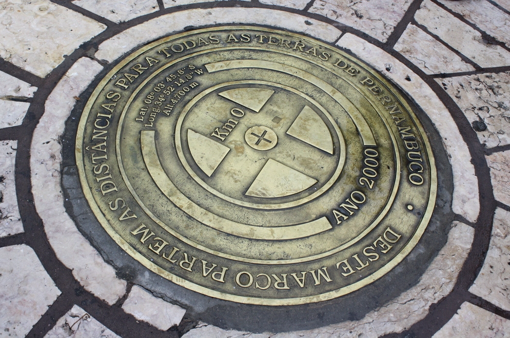

Marco Zero
Recife é considerado o ums dos destinos mais visitados pelos turistas. Venha conhecer!

O Marco Zero, localizado na Praça Rio Branco, é conhecido como local da fundação da cidade de Recifee também como o ponto inicial de contagem das distâncias calculadas a partir da cidade. O lugar é um dos pontos mais importantes da capital pernambucana, pois é também uma região de forte movimento durante o Carnaval.
Aproveite sua visita para tirar uma foto com os dois marcos (o antigo e o novo), observar a vista para o Parque de Esculturas e edifícios do Centro Cultural da Caixa e da Associação Comercial de Pernambuco.
Texto escrito por Camille Panzera, extraído do site https://guia.melhoresdestinos.com.br/marco-zero-108-2110-l.html